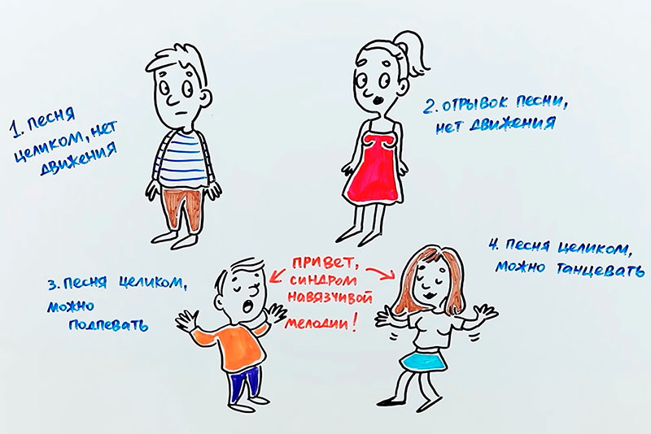
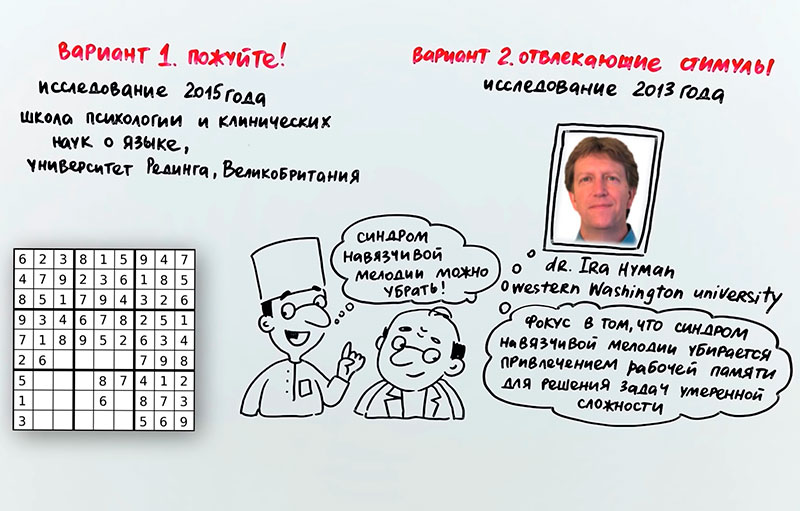

Почему заедает музыка в голове
Однозначного мнения по этому вопросу до сих пор нет, хотя исследования ведутся не один год. Наиболее правдоподобная версия – ассоциативная память. Человек слышит какую-то музыку при определенных обстоятельствах и подсознательно связывает их. Обстоятельства могут быть самые разные – стресс, определенное место или же любые другие. Впоследствии, переживая те же самые обстоятельства, человек вспоминает песню и есть вероятность, что она будет крутиться в голове довольно долго.
С кем такое бывает
Как показывает статистика, с синдромом навязчивой мелодии сталкивается около 98% людей! Причем чаще всего это происходит с музыкантами. Но также выше риск такого синдрома у людей, страдающих компульсивным расстройством, то есть, привычкой выполнять какие-то ритуалы – стучать в дверь три раза, мыть руки два раза подряд и так далее. А вот среди женщин и мужчин различий нет – с синдромом одинаково сталкиваются представители обоих полов. Правда, у мужчин это длится меньше и раздражает их не так сильно. Что интересно – значительно чаще в голове "заедает" именно песни, то есть, музыка со словами – на их долю приходится около 74% случаев синдрома. На инструментальную музыку значительно меньше – всего 8%.
Как музыка прилипает?
В 2015 году психологи, работающие с синдромом навязчивой мелодии, поставили весьма необычный эксперимент. Одну и ту же песню, которая очень часто заедает в подсознании, дали прослушать четырем группам людей. Но условия немного различались. Для первой группы озвучили песню целиком – при этом они сидели неподвижной (контрольная группа). Вторая группа прослушала лишь самый "прилипчивый" фрагмент песни. Подопытные из третьей группы слушали песню целиком и при этом подпевали. Наконец, люди в четвертой группе не только слушали всю песню, но ещё и танцевали под неё.
В результате в первых двух группах количество людей, получивших этот хит в качестве синдрома навязчивой мелодии, было значительно меньше. Таким образом удалось доказать, что заедает не самый запоминающийся фрагмент, а именно песня, если она связана с какой-то деятельностью (в данном случае – пение и танец).
Как избавиться от навязчивой мелодии
Теория это, конечно, хорошо. Но многих людей гораздо больше интересует, что нужно делать, если песня прокручивается в голове уже несколько часов, а то и дней? Оказывается, рецепты борьбы с синдромом существуют и они весьма эффективны.
Самый простой и доступный вариант – пожевать жвачку. Как показало исследование 2015 года столь простая деятельность позволяет отвлечься и избавиться от навязчивой мелодии. Другой, не менее эффективный способ – загрузка рабочей памяти. Нужно дать небольшую нагрузку на мозг. Прекрасно подойдет чтение художественной литературы, разгадывание судоку и кроссвордов. В этом случае ресурсы мозга задействованы для нового задания и их уже не хватает для прокручивания мелодии. Увы, это не панацея - есть вероятность что со временем мелодия вновь вернется. На такой случай стоит держать под рукой хорошую книжку, кроссворд или хотя бы жевательную резинку.